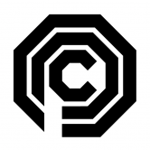

NFT STARS NFT STARS 是一个以新兴 NFT 市场为中心的独特数字艺术市场。NFT STARS 提供了一套独特的技术解决方案，使艺术家和艺术收藏家可以轻松访问 NFT 市场。 NFT STARS 代表着艺术
NFT-Starter NFT-Starter (NST) 起源于 NFT 启动板平台的先驱，并成为 Crypto 中具有各种时尚功能的时尚设定者。 执行这一愿景的计划首先是与 IDO 启动板一起创建享有盛誉的实时高吞吐量体验，
nitro invest 利率 每次合约余额增加 500.000,00 trx 时，您的每日投资回报率就会增加 0.05%，此红利会提高直到达到 5% 2 % forever trx 智能合约计算利润，直至自存入之日起的每笔存款
NoahArkDAO NoahArkDAO 旨在为具有稳定币和流动性证明的 Game-Fi 加密货币提供支持资产。流动性对所有 GameFi 开发人员都很重要。 以马厩币作为支持资产，GameFi 币变得更加稳定，并
Node Runners 获取英雄 赌注 英雄 与恶棍战斗并赌注他们！ 如果您将 MEME 与 CORE 混合并添加 2074 种口味，您将获得 Node Runners — 一款以赛博朋克为主题的可收藏纸牌游戏。 质押流动性以获得
Nolossclub NO LOSS CLUB 是一个开源的基于加密的 NFT 乐透平台。所有 NFT 持有者都有公平的获胜机会，而不会冒着存款风险。奖金由对俱乐部所有价格的兴趣组成。 NOLOSCLUB 是一种基于 DEFI
Nominex / Nomiswap (NMX) Nomiswap/Nominex 的主要功能 Nomiswap得到了广泛认可的Nominex中心化交易所的支持。这两个平台彼此深度集成。 能够以 0% 的费用进行交易——这要归功于实
Non-Fungible Fungi Genesis Non-Fungible Fungi 集体是一个由 10,100 个独特的 3D 动画（和魔法）蘑菇 NFT 组成的王国，它们在以太坊区块链中漫步。每个蘑菇都属于 3 种中的 1 种，魔法、沼泽和沼泽标准，其中
Non-Fungible Heroes @BoringBananasCo 的社区主导项目拥有 3 个无聊的香蕉 NFT，可免费铸造一个 NFH！ Non-Fungible Heroes 是 BBCo 团队为您带来的 NFT 系列，用于教育、娱乐和启发。通过社区参与产生的创意宇
Non-Fungible People Daz 3D 的首个 NFT 合集 Non-Fungible People (NFP) 是 8,888 个超现实 PFP 的合集是由数千个独特特征生成的 8,888 个超现实 PFP 的集合，并以惊人的 3D 呈现。 Daz 3D是 NFT 战略、营销和全栈开发（包括
Non-Fungible Soup Non-Fungible Soup 是 2048 个受 Warhol 启发的生成向量 NFT 的集合。对沃霍尔调色板和臭名昭著的作品“汤罐”的高保真调查。 Non-Fungible Soup 是Art101受 Warhol 启发的 NFT PFP 项目。随机铸造 2,048 种
NonFungiblePixels 基于 NFT 的广告/广告牌平台。以 NFT 形式买卖像素，并根据需要按图像覆盖像素，并链接您的 URL。 我们很高兴地宣布关于雪崩生态系统的 NFT 项目。该项目旨在
Noodle Master 什么是面条大师？ Noodle Master 是一个在 Cronos 网络上实施的项目。由于采用了先进的解决方案，您不可逆转的受阻投资的每日回报将达到每天 9% 的水平。 该团队创建了自己
NOODLE.Finance 为什么是面条？ $NOODLE 将成为最成功的 DeFi 农业代币！做你自己的面条🍜 面条比寿司和泡菜好得多。- 在接下来的三个月里，每 172800 个区块（大约 30 天）奖励将减半。第
Noodles Noodles是 NFT 收集的 5,555 条面条，是对 Doodles 和方便面的滑稽诠释和混搭。作为第一个通过 Doodlebank获得官方批准的 Doodles 衍生产品，我们的社区致力
Northern Guilds 创造历史。拯救人类。统治米德加德。 Northern Guilds 是一款有趣的、与设备无关的地牢爬行者区块链 MMORPG，其灵感来自您最喜欢的童年游戏。在怀旧冒险游戏的
Oly Sport 什么是 奥利运动？ Oly Sport 开启了 NFT 赛马时代——一个在线赛马游戏平台，使用不可替代代币 (NFT) 作为游戏内资产，并使用区块链支持的代币作为货币。Oly Sport 是一
OlympicStaking 什么是 OlympicStaking ？ 基于区块链的奥运赌注。 您可以通过简单的规则投注您的国家或最喜欢的运动员。 一切都是公平和透明的。 欢迎您以明智的判断进行质押，赚取丰厚
Olympus Finance 什么是 奥林巴斯金融？ Olympus Finance 的灵感来自之前的算法稳定协议，例如 Tomb Finance。就像 2OMB Finance 一样，我们的协议使用三种代币（HERMES、ARES、P
Olympus Finance 2 什么是 Olympus Finance 2 ？ Olympus Finance 2 的灵感来自之前的算法稳定协议，例如 Tomb Finance。就像 2OMB Finance 一样，我们的协议使用三种代币（THERMES、TARES、T
 OmniComp 什么是 OmniComp ？ OmniComp 是 OCP（Omni 消费者协议）的分支之一，用户可以在其中获得 $OMNIC 奖励来借贷和铸造。 OMNICOMP 是一个合成货币铸币厂和货币市场。 借出/借入资产
OmniDex 什么是 OmniDex ？ OmniDex 是一个自动化做市 (AMM) 去中心化交易所。在 Telos EVM 上构建的第一个原生 DEX 上交换、耕种并获得奖励！ Telos上的一站式DeFi：赚取利息，获得
Omnimorphs V2 什么是 Omnimorphs V2 ？ Omnimorphs 是一个生成式 NFT 收藏项目，包含 10.000 个独特的数字手绘头像，在以太坊区块链上永生。 Omnimorphs 生活在人类社会的边缘，没有参与，但足够接近观察。尽
OnChain Seasides 什么是 OnChain Seaside？ OnChain Seaside NFT 是一个生成式 NFT 项目，3333 完全链海动画待铸造。有超过 1.000.000.000 种不同的组合可供查找！加入我们的社区，我们每天都会举办
OnChainMonkey 什么是 OnChainMonkey ？ 完全在具有所有这些属性的链 10k 集合上： 所有元数据都在链上，所有图像都在链上（svg 格式）全部在一个 txn 中创建； 所有 10,000 只 OnChain 猴子都是独一无
ONE FACTOR ONE Factor是什么？ ONE Factor 是币安智能链上最好的 Yield Farm 项目，提供更赚钱的农场体验，加密因素是未来！ 作为投资者，您将享受稳定的被动收入和高年利率。
Onechain 什么是ONECHAIN？ ONECHAIN 智能合约旨在为每个人提供 DeFi 支持基金，完全基于 TRON 区块链和智能合约技术。任何参与者都可以向社区基金贡献 TRX 并支持 ONECHAIN 社区成
OneDAO Finance 什么是OneDAO Harmony？ OneDAO 是Harmony Network上第一个基于ODAO 代币的去中心化储备货币协议。每个ODAO 代币都由 OneDAO 库中
OneFifty 什么是 OneFifty ？ OneFifty 是 tron 的第一款双重风格游戏。合约中的每笔存款都会增加余额，直到它可以向第一个投资者支付 1.5 倍的存款。合约继续支付每个人存款的 1.5 倍，按
OneFortune 什么是 OneFortune ？ 玩游戏。下注。获得奖励。OneFortune 是一个开创性的游戏赚钱区块链 GameFi 平台。OneFortune 建立在 Polygon 网络之上，让玩家能够获


 是 8,888 个超现实 PFP 的合集")

 附加实用功能。推荐奖金高达 23%！DAO 战斗价格")